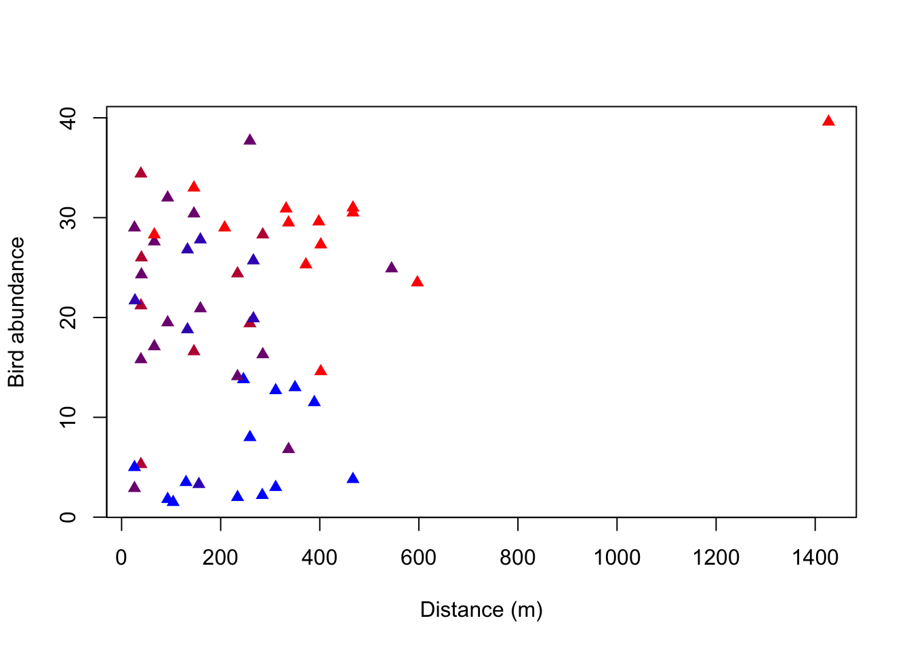
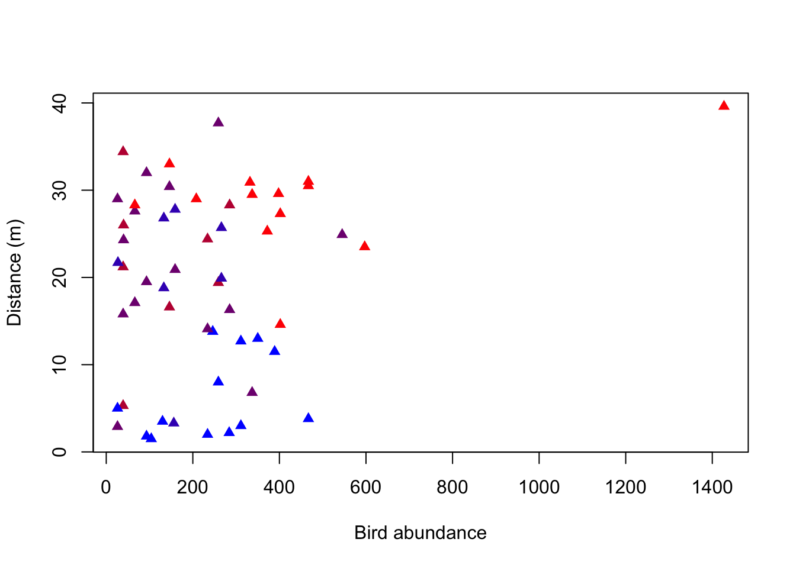

library(EcoData)
# View(arthritis)
# Get the data
dat <- arthritis
# Coerce columns ’Improved' and 'Treatment' to (ordered) factors
# (When the factor is ordered, other functions like table() and barplot() will use this order.
# Otherwise, the levels will be ordered alphabetically.)
dat$Improved <- factor(dat$Improved, levels = c("None","Some","Marked"), ordered = TRUE)
dat$Treatment <- as.factor(dat$Treatment)
str(dat)
## 'data.frame': 84 obs. of 5 variables:
## $ ID : int 57 46 77 17 36 23 75 39 33 55 ...
## $ Treatment: Factor w/ 2 levels "Placebo","Treated": 2 2 2 2 2 2 2 2 2 2 ...
## $ Sex : chr "Male" "Male" "Male" "Male" ...
## $ Age : int 27 29 30 32 46 58 59 59 63 63 ...
## $ Improved : Ord.factor w/ 3 levels "None"<"Some"<..: 2 1 1 3 3 3 1 3 1 1 ...Exercise - Plots and summary statistics
In this exercise you will practice:
- creating and plotting contingency tables for categorical variables (mosaicplot)
- plotting a numerical variable (histogram)
- plotting two numerical variables against each other (scatterplot)
- calculating correlations
To perform this exercise use the help of the according functions. Also have a look at the examples at the bottom of the help page. You can obtain help for a specific function in several ways:
- select the function in your script (e.g. double click it or simply place the cursor in the word) and press F1
- “?” + function name (e.g. ?hist) and execute
- go to the “help” panel (below the environment) and search for the function
Let’s get started!
Tasks:
- Read the text below
- Run the examples
- Do the specific R exercises that are in the following pink block:
Example-Questions
What is the answer to everything?
Hints:
The Hitchhiker’s Guide to the Galaxy
Contingency tables
Here, we will have a look at the data set “arthritis” from the “EcoData” package. The study was conducted as a double-blind clinical trial investigating a new treatment against arthritis. The improvement was measured as a categorical variable with the possible outcomes “Improved”, “Some” or “None”.
Install and then load the package “EcoData” and have a look at the data using the View() function. This will open a new tab next to your R script. To return to your script, close the new tab or click on your script.
An important function for categorical data is table(). It produces a contingency table counting the occurrences of the different categories of one variable or of each combination of the categories of two (or more) variables.
We are curious how many patients actually improved in the study and how this is influenced by the treatment. To show this graphically, we produced two plots (see below) using the following functions:
table()plot()andbarplot()- (
str()) - (
summary())
Task
Your task is now to reconstruct the two plots shown below by using these functions.


What do you think of the study now? Could you already draw conclusions from this plot?
Hints for plot 1
What kind of plot is shown here? How many variables are shown in the plot? Approach: First, create a new object consisting of the table of the variable of interest. Then use this object for plotting. Changing plot elements: Have a look at the help of the plotting-function to find out how to change the y- and x-axis labels. What do you notice on the y-axis? You can change the limits of the y-axis using “ylim = c(from, to)” as an argument in the plotting function.
Hints for plot 2
What kind of plot can you see here? How many variables does it show? To plot this you need to create a contingency table with the variables of interest. Changing plot elements: You can name the variables in your contingency table (e.g. name = variable, othername = othervariable). The name you assign to your table will be used as the title in the plot.
Plot 1
counts <- table(dat$Improved) # create a table which gives you counts of the three categories in the "Improved" variable
barplot(counts, # create a barplot of your table
ylim = c(0,50), # change the limits of your y axis: starting from zero to 50
xlab = "Improved", # add a label to your x axis
ylab = "Frequency") # add a label to your y axis
Plot 2
Ratios <- table(Improved = dat$Improved, Treatment = dat$Treatment) # create a table with the assigned name "ratios", give the name "Improved" to the first variable which is the variable Improved from the data set Arthritis, give the name "Treatment" to the second variable which is the variable Treatment from the data set Arthritis
plot(Ratios) # create a plot of the table "ratios"
To view the tables with the names “counts” and “Ratios” you can simply execute their names:
counts
##
## None Some Marked
## 42 14 28
Ratios
## Treatment
## Improved Placebo Treated
## None 29 13
## Some 7 7
## Marked 7 21Could you already draw conclusions from this plot? No, because this is only a descriptive plot. You can say that a large proportion of the patients that got a placebo treatment did not improve while a large proportion of the patients that got the new treatment improved markedly. However, this could also be the result of random variation and sampling. We need inferential statistics to make conclusions about the effectiveness of the treatment.
Histogram
Now let’s have a look at the “birdabundance” dataset, which is in the “EcoData” package. This is not stored at CRAN (the official platform for R packages, but at github where we host our own code collections). If you haven’t done this yet, use the code below to install the package (note that you also need the “devtools” package to do this. Again, to load it and make the data set accessible, execute the function library(EcoData). To view the data set you can use the View() function again.
You can also get more explanations on the data set via the help.
install.packages("devtools")
library(devtools)
devtools::install_github(repo = "TheoreticalEcology/EcoData", dependencies = T, build_vignettes = T)
library(EcoData)
View(birdabundance)The dataset has been assessed by scientists in Australia who counted birds in forest fragments and looked for drivers that influence these bird abundances, e.g. the size of a forest fragment and the distance to the next fragment. We want to see how these distances vary. A histogram is the standard figure to depict one numerical variable, such as for example distance measurements.
Task
Your task is now to reconstruct the following histogram including the labels, colors and lines using the functions:
hist()to create a histogramabline()to add (vertical) lines to your histogram
Think about what the histogram tells you about the distances between each forest fragment and the next forest fragment. What do the red and purple lines represent? Which site was the furthest away from forest fragments?

Hints for plotting
Change the color (look at the help to see how). You can also try other colors, e.g. your favorite color (you can find all available colors with the function colors()). Change the bar widths (breaks). Play around to see how they change. When changing the bar widths, what do you notice on the y-axis? You can change the y-axis limits using “ylim” (see examples for hist(), second last line). Change the title and the x-axis name of your histogram using the arguments “main” and “xlab”.
To add the lines, try the abline() function with the argument “v = 90” and look what happens. To remove the line, you have to execute the code producing your histogram again. Remember that abline() is a low level plotting function, which means it only adds an element to an existing plot! Instead of calculating the depicted values with a function and then pasting the values into your abline function, you can also directly use the function in abline().
See an example on the right.
You can plot the histogram like this:
hist(birdabundance$DIST, # plot a histogram of the varriable distance from the data set birdabundance
breaks = 20, # change bar widths, here we make them smaller
col = "blue", # change color to blue
ylim = c(0,20), # change the range of the y axis to from 0 to 20
main = "Distance distribution", # change title of the plot
xlab = "Distance to the next forest fragment") # change x axis name
abline(v = mean(birdabundance$DIST), col = "red") # add a vertical line with an x value equal to the mean of the variable distance
abline(v = median(birdabundance$DIST), col = "purple") # add a vertical line with an x value equal to the median of the variable distanceWhat do the red and purple lines represent?
The red line represents the mean distance between forest fragments, while the purple line represents the median.
Which site was the furthest away from forest fragments?
# Extract the line in which the variable DIST takes its maximum
birdabundance[which.max(birdabundance$DIST),]
## Site ABUND AREA DIST LDIST YR.ISOL GRAZE ALT
## 48 48 39.6 49 1427 1557 1972 1 180The site number 48 was the furthest away.
hist(airquality$Temp)
abline(v = 90, col = "blue")
abline(v = median(airquality$Temp), col = "red")
Scatterplot
As you’ve learned by now, plot() can create different types of plots depending on the type of the input data. It creates a scatterplot when plotting two numerical variables. Now we are interested to see how the abundance of birds is affected by the distance to the next forest fragment, and if there is another variable that is important for this relationship (visualized here by the color of the points).
Task
Again, your task is to reconstruct the following plot using the following functions:
plot()- (
str()) - (
summary())
What do you notice about the distribution of the colors along bird abundance?
What is the mean bird abundance per color?

Hints for plotting:
What is plotted on the x-axis, what on the y-axis?
There are two different ways to write the plot function. One is to stick with the “Usage” in the help of the plot function (giving coordinates along the x-axis as the first attribute and those along the y-axis as the second attribute). The other way is to write the relationship between x and y as a formula that is: y~x, data = dataset Use google to find out how you can change the point shapes in your plot.
Look at the dataset to find out which variable is indicated by the color of the points in the plot. Hint: It is a variable indicating 5 intensity levels. To change the color, include the attribute “col” in your plot function and set it equal to the variable.
To get a color gradient you can create a function with the following code. Apply it before producing your plot and use the created function rbPal() as the color in the plot.
# Palettes can be created with a function for the grDevices package
install.packages("grDevices")
library(grDevices)
# Create a function to generate a continuous color palette from red to blue
rbPal <- colorRampPalette(c('red','blue'))
# Example for color in a plot
plot(Ozone ~ Solar.R, data = airquality,
col = rbPal(12)[Month]) # you can use any number, here it's 12 because we have 12 monthsYou can either create a scatterplot of two numerical variables like this:
#Create a function to generate a continuous color palette from red to blue
rbPal <- colorRampPalette(c('red','blue')) # rpPal for red to blue palette
plot(birdabundance$DIST, birdabundance$ABUND, # create a plot of the variables DIST against ABUND from the data set birdabundance
ylab = "Distance (m)", # add the label "Distance" to the y axis
xlab = "Bird abundance", # add the label "Bird abundance" to the x axis
col = rbPal(5)[birdabundance$GRAZE], # color the data points according to their category in the variable GRAZE from the data set birdabundance
pch = 17) # change the point shape
Or like this:
plot(ABUND ~ DIST, data = birdabundance, # create a plot of the variables DIST against ABUND from the data set birdabundance
xlab = "Distance (m)", # add the label "Distance" to the x axis
ylab = "Bird abundance", # add the label "Bird abundance" to the y axis
col = rbPal(5)[GRAZE], # color the data points according to their category in the variable GRAZE as a gradient
pch = 17) # change the point shape
The advantage of the second version is that it uses the structure of “response variable (y) explained by (~) explanatory variable (x)”. Also, you tell the plot function which data set to use once and it will automatically draw the variables from there, while in the first version you name the data set and the respective variable each time (even for the color).
What do you notice about the distribution of the colors along bird abundance?
You can see that the blue data points are only at the low abundances, whereas the red data points are rather at the higher abundances. Purple data points are throughout all abundances. There thus seems to be a correlation between the grazing classes and bird abundances.
What is the mean bird abundance per color / level of grazing intensity?
# Option 1: Using tidyverse / dplyr as shown at the end of section 2.0.1 Summary statistics:
library(dplyr)
##
## Attaching package: 'dplyr'
## The following objects are masked from 'package:stats':
##
## filter, lag
## The following objects are masked from 'package:base':
##
## intersect, setdiff, setequal, union
bird_grouped <- birdabundance %>% # define dataset to be summarized
group_by(GRAZE) %>% # define grouping factor
summarise(mean.abund = mean(ABUND)) # summarize by taking the mean of abundance
# Option 2: Using base R and formula notation:
bird_grouped <- aggregate(ABUND~GRAZE, data = birdabundance, FUN = mean)
bird_grouped
## GRAZE ABUND
## 1 1 28.623077
## 2 2 21.950000
## 3 3 21.286667
## 4 4 20.571429
## 5 5 6.292308Boxplot
The boxplot() function can be used to create boxplots - to visualize associations between continuous and categorical variables.
The function can be used in two ways (similar to the plot() function): a) by specifcing x and y arguments and b) the formula syntax (the preferred way!):
boxplot(Sepal.Length~Species, data = iris)(Syntax: continuous variable ~ categorical variable )
Task
In the MASS package there is a dataset (Melanoma) about patients with malignant melanoma:
library(MASS)
##
## Attaching package: 'MASS'
## The following object is masked from 'package:dplyr':
##
## select
## The following object is masked from 'package:EcoData':
##
## snails
df = Melanoma
df$sex = ifelse(df$sex == 0, "female", "male")
df$status = as.factor(df$status)
str(df)
## 'data.frame': 205 obs. of 7 variables:
## $ time : int 10 30 35 99 185 204 210 232 232 279 ...
## $ status : Factor w/ 3 levels "1","2","3": 3 3 2 3 1 1 1 3 1 1 ...
## $ sex : chr "male" "male" "male" "female" ...
## $ age : int 76 56 41 71 52 28 77 60 49 68 ...
## $ year : int 1972 1968 1977 1968 1965 1971 1972 1974 1968 1971 ...
## $ thickness: num 6.76 0.65 1.34 2.9 12.08 ...
## $ ulcer : int 1 0 0 0 1 1 1 1 1 1 ...We want to check for associations between the age of the patients and the status of the melanoma, and later, at the same time for their sex:
Tasks:
- Create boxplot with age against status
- Create boxplot with age against status AND sex (both groups at the same time)
- Add colors (for sex)
- Add Notch
- Increase spacing between the different groups (status)
- Bonus: add the observations/points on top of the boxplot using the
library(beeswarm)package
Can we use boxplots to make inference (are there significant differences)? What is the Notch?
Hints:
If you need help with the boxplot for age against status AND sex, check google, for example this query
Spacing:
atargument in theboxplot( )functionInstall the beeswarm package via
install.packages("beeswarm")
If we use colors, we also need a legend!
Sometimes it is helpful to add the points/observations into the boxplot:
library(beeswarm)
b = boxplot(age~sex+status,
at = c(1:2, 4:5, 7:8), # x coordinates
col = c("#FF002387", "#5544FF77"),
data = df,
las = 1, # rotate labels so that all are horizontal
xaxt = "n", # omit x-axis labels+ticks, we will add them manually
xlab = "", # no xlab, unncessary
notch = TRUE
)
beeswarm(age~sex+status,
data = df,
add = TRUE,
at = c(1:2, 4:5, 7:8) # x - coordinates
)
axis(1, # which side of the plot, 1 == x-axis
at = c(1.5, 4.5, 7.5), # x coordinates
labels = c("Status 1", "Status 2", "Status 3") # labels
)
legend("bottomright", # position of the legend (x and y coordinates can be also used)
bty = "n", # omit border line, personal preference
legend = c("Female", "Male"),
col = c("#FF002387", "#5544FF77"),
pch = 15 # point type (squares)
)Can we use boxplots to make inference (are there significant differences)? What is the Notch?:
Box plots by themselves cannot be used to make conclusions about significant differences. Tomorrow we will learn that we have two statistics for hypothesis testing, the effects (e.g., means) and the uncertainties of those effects/estimates. The box plot shows the medians, which we could theoretically use for testing. However, the boxplot doesn’t report the uncertainty of the reports. The uncertainty of the estimate is not the width/height of the box, it is just the distribution of the variable, for example:
set.seed(2)
var1 = rnorm(50)
var2 = rnorm(10000)
sd(var1)/sqrt(50)
## [1] 0.1597612
sd(var2)/sqrt(10000)
## [1] 0.009994205
df = data.frame(values = c(var1, var2), group = as.factor(c(rep("var1", 50), rep("var2", 10000))))
par(mfrow = c(1,1))
boxplot(values~group, data = df, notch = TRUE)
text(1, 4.5,xpd = NA, labels = paste0("N = 50, standard error = ", round(sd(var1)/sqrt(50), 4)))
text(2, 4.5,xpd = NA, labels = paste0("N = 10000, standard error = ", round(sd(var1)/sqrt(10000), 4)))The standard error changes with the number of observations (more on this tomorrow), while the distribution (the box) remains relatively stable!
The notch is the confidence interval of the median, so 2*the standard error of the median. We can roughly say that there is a significant difference when the confidence intervals overlap!
Correlation
Task
In the previous plot on bird abundance you’ve seen three variables. Now we want to know, how they are correlated with each other. Remember that we can use the function cor() to calculate correlations. Which of the following correlation coefficients (Pearson) belongs to which variable pair? Can you see these correlations in your previous plot?
## [1] 0.2361125
## [1] -0.6825114
## [1] -0.2558418Think about the meaning of the correlation values (positive/negative, strength). Is it what you would have expected by looking at the plot?
#### Solution
cor(birdabundance$ABUND, birdabundance$DIST)
## [1] 0.2361125
cor(birdabundance$ABUND, birdabundance$GRAZE)
## [1] -0.6825114
cor(birdabundance$GRAZE, birdabundance$DIST)
## [1] -0.2558418The first correlation (abundance to distance) tells us that there is a small positive correlation between the two variables, but it does not tell us whether it is significant or not. We will properly test such relationships later in the course. In the scatter plot we have seen this weak positive correlation already. The second correlation (abundance to grazing) tells us that there is a stronger negative correlation between abundance and grazing. We have already seen a pattern of the color of the data points along bird abundances (red towards higher, blue towards lower abundances). The third correlation (grazing to distance) tells us that there is a small negative correlation between the two variables. However, the color pattern along distance is not as obvious as for abundance.
Bonus - Advanced visualization with the base R package
You can create any kind of plot or even visualization in R. If you want to plot abstract objects in R, start with an empty plot window (plot(NULL,NULL, xlim = c(0,1), ylim = c(0,1), axes = F) and then fill it however you like, two examples:
In Pichler et al. 2020 we created Figure 5 A (an overview over the data used in the paper) using base R:
par(mfrow = c(1,1),mar = c(0.3,3,1,3)+0.0,oma = c(1,0.3,2,1))
# Fig5a
plot(NULL,NULL, xlim = c(0,1), ylim = c(0,1), axes = F, xlab = "", ylab = "")
#text(x = -0.06, y = 1.03, labels = "(a)", cex = 0.9, xpd = NA, font = 2)
polygon(c(0,0.125,0.17,0.19,0.35,0.51,0.65,0.85), c(0,0.25,0.5,0.42,1,0.35,0.09,0), lwd = 2, col = "lightgrey", xpd = NA)
baseX = 0.72
baseYv = c(0.1,0.4,0.7)
cols = RColorBrewer::brewer.pal(3, "Accent")
altitude = c("50 m.a.s.l", "1000 m.a.s.l", "2000 m.a.s.l")
lineY = baseYv+0.05
for(i in 1:3) {
baseY = baseYv[i]
rect(xleft = baseX, xright = baseX+0.025,ybottom = baseY,ytop = baseY+0.1, col = cols[i], lwd = 0.8)
rect(xleft = baseX+0.035, xright = baseX+0.135,ybottom = baseY,ytop = baseY+0.1, col = cols[i], lwd = 0.8)
rect(xleft = baseX+0.035, xright = baseX+0.135,ybottom = baseY+0.11,ytop = baseY+0.135, col = cols[i], lwd = 0.8)
y = lineY[i]
lines(y = rep(y,2), x = c(0.0,baseX-0.05), lty = 3, lwd = 1.2, xpd = NA)
text(y = y+0.03, x = -0.15, labels = altitude[i], cex = 0.7, pos = 4, xpd = NA, font = 2)
}
text(x = 0.85, y = baseYv[1]+0.05,pos = 4, xpd = NA, cex = 0.9, labels = "Low", font = 2)
text(x = 0.85, y = baseYv[2]+0.05,pos = 4, xpd = NA, cex = 0.9, labels = "Mid", font = 2)
text(x = 0.85, y = baseYv[3]+0.05,pos = 4, xpd = NA, cex = 0.9, labels = "High", font = 2)
text(x = 0.35, y = 0, pos = 3, labels = "Costa Rica", cex = 0.9, font = 2)Go through the code and try to understand which line or function call creates which element in the plot!
Figure 3 in the same paper is based on the following function (which we have developed just for this paper!):
spider = function(x1 = NULL,x2 = NULL, colRec = "#ff9999", alphaRec = 0.5,colRecBorder = NULL, titles = NULL, stepsText = NULL,singlePanel = F,
rectangular = F,
colSpider = "#e6e6e6" ,alphaSpider = 0.5,
colBorder = c("#cccccc","#cccccc","#666798","#cccccc","#cccccc"),
maxValues = NULL,minValues = NULL,
rad = 5, cexSteps = 1.4, cexProcent = 0.8,
parValues = list(pty = "s"), cexPoints = 1.0, circleLines = 5, twistSteps = 90, cexTitles = 0.7){
if(is.null(colRecBorder)) colRecBorder = colRec
if(is.null(dim(x1))) x1 = matrix(x1, ncol = length(x1), nrow = 1)
if(!is.null(x2)){
if(is.null(dim(x2))) x2 = matrix(x2, ncol = length(x2), nrow = 1)
}
if(is.null(maxValues)) maxValues = rep(1, ncol(x1))
if(is.null(minValues)) minValues = rep(0, ncol(x1))
if(!is.null(colRec)) colRec2 = addA(colRec, 0.5*alphaRec)
if(!is.null(colRec)) colRec = addA(colRec, alphaRec)
if(length(colRec) == 1) {
colRec = rep(colRec, nrow(x1))
colRecBorder = rep(colRecBorder, nrow(x1))
}
## scale:
for(i in 1:ncol(x1)){
x1[,i] = (x1[,i] + abs(minValues[i]))/(abs(minValues[i]) + maxValues[i])
if(!is.null(x2)) x2[,i] = (x2[,i] + abs(minValues[i]))/(abs(minValues[i]) + maxValues[i])
if(any(x1[,i] > maxValues[i])) stop("Max values are lower than actual values")
if(any(x1[,i] < minValues[i])) stop("Min values are higher than actual values")
}
if(!is.null(x2)){
if(nrow(x2) != nrow(x1)) stop("x1 and x2 do not have equal number of rows")
}
## init:
lineSeq = seq(rad*0.1,rad, length.out = 5)
tmpSinglePanel = T
do.call(par, parValues)
nseg=1440
nSeg = ncol(x1)
procent = matrix(0,circleLines,2)
colSpider <- addA(colSpider, alphaSpider)
lines = circleLines
lineSeq = seq(rad*0.1,rad, length.out = lines)
angles = seq(0+twistSteps,360+twistSteps,length.out = nSeg+1)[1:(nSeg)]
baseRadar = function() {
plot(NULL, NULL, xlim = c(-5,5), ylim =c(-5,5),pty="s", axes = F, xlab = "", ylab = "")
if(!rectangular)
for(i in 1:length(lineSeq)){
xx = lineSeq[i]*cos( seq(0,2*pi, length.out=nseg) )
yy = lineSeq[i]*sin( seq(0,2*pi, length.out=nseg) )
if(i == lines) polygon(xx,yy, col= colSpider, border = colBorder[lines], lty = 2, lwd = 1)
else if(i == ceiling(lines)) polygon(xx,yy, border = colBorder[ceiling(lines)], lty = 2)
else if(i == 1) polygon(xx,yy, border = colBorder[lines], lty = 2)
else polygon(xx,yy, border = colBorder[i], lty = 2)
}
else
for(i in 1:length(lineSeq)){
xx = cos(deg2rad(angles))*lineSeq[i]
yy = sin(deg2rad(angles))*lineSeq[i]
if(i == lines) polygon(xx,yy, col= colSpider, border = colBorder[lines], lty = 2, lwd = 1)
else if(i == ceiling(lines)) polygon(xx,yy, border = colBorder[ceiling(lines)], lty = 2)
else if(i == 1) polygon(xx,yy, border = colBorder[lines], lty = 2)
else polygon(xx,yy, border = colBorder[i], lty = 2)
}
for(counter in 1:length(angles)) {
segments(x0 = cos(deg2rad(angles[counter]))*lineSeq[1],
y0 = sin(deg2rad(angles[counter]))*lineSeq[1],
x1 = cos(deg2rad(angles[counter]))*rad ,
y1 = sin(deg2rad(angles[counter]))*rad ,
col = colBorder[5])
}
}
## plot rect
for(data in 1:nrow(x1)){
if(data == 1 || !singlePanel) baseRadar()
valuesP = matrix(0,nSeg,2)
textP = matrix(0,nSeg,2)
valuesPtrain = matrix(0,nSeg,2)
drTest = x1[data,,drop = F]
drTrain = x2[data,,drop = F]
for(i in 1:nSeg){
valuesP[i,1] = cos(deg2rad(angles[i]))*drTest[1,i]*(rad-lineSeq[1]) +
cos(deg2rad(angles[i]))*lineSeq[1]
valuesP[i,2] = sin(deg2rad(angles[i]))*drTest[1,i]*(rad-lineSeq[1]) +
sin(deg2rad(angles[i]))*lineSeq[1]
if(!is.null(x2)){
valuesPtrain[i,1] = cos(deg2rad(angles[i]))*drTrain[1,i]*(rad-lineSeq[1]) +
cos(deg2rad(angles[i]))*lineSeq[1]
valuesPtrain[i,2] = sin(deg2rad(angles[i]))*drTrain[1,i]*(rad-lineSeq[1]) +
sin(deg2rad(angles[i]))*lineSeq[1]
}
textP[i,1] = cos(deg2rad(angles[i]))*1.0*rad
textP[i,2] = sin(deg2rad(angles[i]))*1.08*rad
}
polygon(y = valuesP[,2], x = valuesP[,1], col = colRec[data],border = colRecBorder[data], lwd = 1.5)
points(y = valuesP[,2], x = valuesP[,1], pch = 16, col = colRecBorder[data], cex = cexPoints)
if(!is.null(x2)){
polygon(y = valuesPtrain[,2], x = valuesPtrain[,1], col = colRec2[data],border = colRecBorder[data], lwd = 1.5, lty = 2)
points(y = valuesPtrain[,2], x = valuesPtrain[,1], pch = 16, col = colRecBorder[data], cex = cexPoints, lty = 2)
}
## Text
if(data == 1 || !singlePanel){
measures = stepsText
if(!is.null(measures)){
strl = max(sapply(measures,nchar))
anglesP = angles - 90
pos = sapply(angles, function(x) {
if(x >= 45 && x <= 95 ) return(3)
if(x>95 && x<240) return(2)
if(x>=240 && x<=300) return(1)
if(x>300 &&x<=450) return(4)
if(x<45) return(4)
})
if(!is.na(cexSteps)) text(x = textP[,1], y = textP[,2], labels = measures, xpd = T, font = 2, cex = cexSteps, pos = pos)
}
if(!is.null(titles)) title(main = titles, outer = F, cex.main = cexTitles)
}
if(nrow(procent) == 3) procentLabels = c(" 0%", " 50%", "100%")
else procentLabels = c(" 0%", " 25%", " 50%", " 75%", "100%")
if(!singlePanel){
procent[,1] = 0.2
procent[,2] = lineSeq
text(x = procent[,1], y = procent[,2], labels = procentLabels,
adj = c(-0.2,0.8), font = 2, cex = cexProcent)
} else {
if(data == nrow(x1)){
procent[,1] = 0.2
procent[,2] = lineSeq
text(x = procent[,1], y = procent[,2], labels = procentLabels,
adj = c(-0.2,0.8), font = 2, cex = cexProcent)
}
}
}
}
deg2rad <- function(deg) {(deg * pi) / (180)} # degrees to radial
addA <- function(col, alpha = 0.25) apply(sapply(col, col2rgb)/255, 2, function(x) rgb(x[1], x[2], x[3], alpha=alpha)) # change contrast
spider(runif(10), runif(10))Try to roughly understand the different parts of the spider function!
Task:
Plot/Draw a donut!
plot(NULL, NULL, type = "n", axes = FALSE, xlim = c(-1, 1), ylim = c(-1,1), xlab = "", ylab = "", pty="s")
theta = seq(0, 2 * pi, length = 500)
polygon(x = cos(theta), y = sin(theta), col = "#A58800")
polygon(x = 0.5*cos(theta), y = 0.5*sin(theta), col = "#FFFFFF")